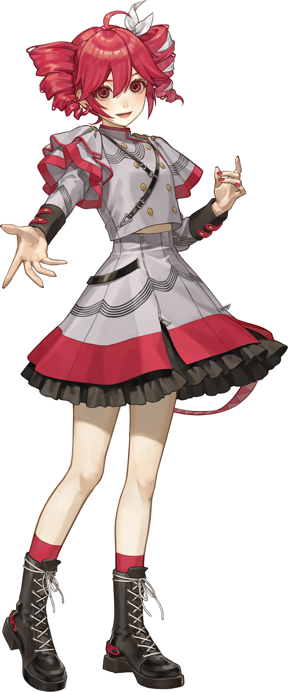

<!DOCTYPE html>
<html lang="en">

<head>
    <meta charset="UTF-8">
    <meta name="viewport" content="width=device-width, initial-scale=1.0">
    <title>Documentation | CursorPort</title>
    <link rel="icon" type="image/svg+xml" href="./images/favicon.svg">
    <meta name="description"
        content="How CursorPort converts Windows .ani and .cur cursors to Linux themes, the sources behind it, and credits.">
    <link rel="canonical" href="https://cursorport.01blue.org/documentation.html" />

    <!-- Open Graph / Social Media -->
    <meta property="og:type" content="website">
    <meta property="og:url" content="https://cursorport.01blue.org/documentation.html">
    <meta property="og:title" content="Documentation | CursorPort">
    <meta property="og:description" content="How CursorPort converts Windows .ani and .cur cursors to Linux themes, the sources behind it, and credits.">
    <meta property="og:image" content="https://cursorport.01blue.org/images/miku.png">
    <meta property="og:site_name" content="CursorPort">
    <meta name="twitter:card" content="summary_large_image">
    <meta name="twitter:title" content="Documentation | CursorPort">
    <meta name="twitter:description" content="How CursorPort converts Windows .ani and .cur cursors to Linux themes, the sources behind it, and credits.">
    <meta name="twitter:image" content="https://cursorport.01blue.org/images/miku.png">

    <!-- 
        LIBRARIES (Same as index.html for consistency)
    -->
    <script src="https://cdn.tailwindcss.com"></script>
    <script>
        tailwind.config = {
            darkMode: 'class',
            theme: {
                extend: {
                    colors: {
                        miku: { DEFAULT: '#39C5BB', 50: '#F0FDFA', 100: '#CCFBF1', 400: '#2DD4BF', 500: '#14B8A6', 900: '#134E4A', glow: '#39C5BB88' },
                        teto: { DEFAULT: '#D03E5C', 50: '#FFF1F2', 100: '#FFE4E6', 400: '#FB7185', 500: '#F43F5E', 900: '#881337', glow: '#D03E5C88' },
                        neru: { DEFAULT: '#F2C911', 400: '#FACC15', 500: '#EAB308', glow: '#F2C91188' }
                    },
                    fontFamily: { sans: ['Inter', 'sans-serif'], mono: ['JetBrains Mono', 'monospace'] },
                    animation: { 'fade-in': 'fadeIn 0.5s ease-out forwards' },
                    keyframes: { fadeIn: { '0%': { opacity: '0', transform: 'translateY(10px)' }, '100%': { opacity: '1', transform: 'translateY(0)' } } }
                }
            }
        }
    </script>
    <script src="https://unpkg.com/react@18/umd/react.production.min.js"></script>
    <script src="https://unpkg.com/react-dom@18/umd/react-dom.production.min.js"></script>
    <script src="https://unpkg.com/@babel/standalone@7/babel.min.js"></script>

    <link rel="stylesheet" href="./style.css">
</head>

<body>
    <div id="root"></div>
    <script type="text/babel">
        const { useState, useEffect } = React;

        // --- ICONS ---
        const Icon = ({ children, className = "" }) => (
            <svg xmlns="http://www.w3.org/2000/svg" width="20" height="20" viewBox="0 0 24 24" fill="none" stroke="currentColor" strokeWidth="2" strokeLinecap="round" strokeLinejoin="round" className={className}>
                {children}
            </svg>
        );
        const ArrowLeft = (p) => <Icon {...p}><line x1="19" y1="12" x2="5" y2="12"></line><polyline points="12 19 5 12 12 5"></polyline></Icon>;
        const Code = (p) => <Icon {...p}><polyline points="16 18 22 12 16 6"></polyline><polyline points="8 6 2 12 8 18"></polyline></Icon>;
        const Image = (p) => <Icon {...p}><rect x="3" y="3" width="18" height="18" rx="2" ry="2"></rect><circle cx="8.5" cy="8.5" r="1.5"></circle><polyline points="21 15 16 10 5 21"></polyline></Icon>;
        const MousePointer = (p) => <Icon {...p}><path d="M3 3l7.07 16.97 2.51-7.39 7.39-2.51L3 3z"></path><path d="M13 13l6 6"></path></Icon>;
        const Sun = (p) => <Icon {...p}><circle cx="12" cy="12" r="5"></circle><line x1="12" y1="1" x2="12" y2="3"></line><line x1="12" y1="21" x2="12" y2="23"></line><line x1="4.22" y1="4.22" x2="5.64" y2="5.64"></line><line x1="18.36" y1="18.36" x2="19.78" y2="19.78"></line><line x1="1" y1="12" x2="3" y2="12"></line><line x1="21" y1="12" x2="23" y2="12"></line><line x1="4.22" y1="19.78" x2="5.64" y2="18.36"></line><line x1="18.36" y1="5.64" x2="19.78" y2="4.22"></line></Icon>;
        const Moon = (p) => <Icon {...p}><path d="M21 12.79A9 9 0 1 1 11.21 3 7 7 0 0 0 21 12.79z"></path></Icon>;
        const Settings = (p) => <Icon {...p}><circle cx="12" cy="12" r="3"></circle><path d="M19.4 15a1.65 1.65 0 0 0 .33 1.82l.06.06a2 2 0 0 1 0 2.83 2 2 0 0 1-2.83 0l-.06-.06a1.65 1.65 0 0 0-1.82-.33 1.65 1.65 0 0 0-1 1.51V21a2 2 0 0 1-2 2 2 2 0 0 1-2-2v-.09A1.65 1.65 0 0 0 9 19.4a1.65 1.65 0 0 0-1.82.33l-.06.06a2 2 0 0 1-2.83 0 2 2 0 0 1 0-2.83l.06-.06a1.65 1.65 0 0 0 .33-1.82 1.65 1.65 0 0 0-1.51-1H3a2 2 0 0 1-2-2 2 2 0 0 1 2-2h.09A1.65 1.65 0 0 0 4.6 9a1.65 1.65 0 0 0-.33-1.82l-.06-.06a2 2 0 0 1 0-2.83 2 2 0 0 1 2.83 0l.06.06a1.65 1.65 0 0 0 1.82.33H9a1.65 1.65 0 0 0 1-1.51V3a2 2 0 0 1 2-2 2 2 0 0 1 2 2v.09a1.65 1.65 0 0 0 1 1.51 1.65 1.65 0 0 0 1.82-.33l.06-.06a2 2 0 0 1 2.83 0 2 2 0 0 1 0 2.83l-.06.06a1.65 1.65 0 0 0-.33 1.82V9a1.65 1.65 0 0 0 1.51 1H21a2 2 0 0 1 2 2 2 2 0 0 1-2 2h-.09a1.65 1.65 0 0 0-1.51 1z"></path></Icon>;
        const Info = (p) => <Icon {...p}><circle cx="12" cy="12" r="10"></circle><line x1="12" y1="16" x2="12" y2="12"></line><line x1="12" y1="8" x2="12.01" y2="8"></line></Icon>;
        const Terminal = (p) => <Icon {...p}><polyline points="4 17 10 11 4 5"></polyline><line x1="12" y1="19" x2="20" y2="19"></line></Icon>;
        const Zap = (p) => <Icon {...p}><polygon points="13 2 3 14 12 14 11 22 21 10 12 10 13 2"></polygon></Icon>;
        const Book = (p) => <Icon {...p}><path d="M4 19.5A2.5 2.5 0 0 1 6.5 17H20"></path><path d="M6.5 2H20v20H6.5A2.5 2.5 0 0 1 4 19.5v-15A2.5 2.5 0 0 1 6.5 2z"></path></Icon>;
        const Sparkles = (p) => <Icon {...p}><path d="M12 3l1.9 5.8L20 11l-6.1 2.2L12 19l-1.9-5.8L4 11l6.1-2.2z"></path></Icon>;

        const VERSION = 'v4.0';

        // Sources behind each part of the converter and install script.
        const SOURCES = [
            {
                group: 'Linux cursor themes',
                items: [
                    { name: 'freedesktop Icon Theme Specification', use: 'Theme folder layout, index.theme and the Inherits key.', link: 'https://specifications.freedesktop.org/icon-theme-spec/latest/' },
                    { name: 'XDG Base Directory Specification', use: 'Installing to $XDG_DATA_HOME/icons (~/.local/share/icons) by default.', link: 'https://specifications.freedesktop.org/basedir-spec/latest/' },
                    { name: 'Xcursor (libXcursor) manual', use: 'The Xcursor file format the converter writes: premultiplied ARGB images, nominal sizes, hotspots and frame delays.', link: 'https://www.x.org/releases/current/doc/man/man3/Xcursor.3.xhtml' },
                    { name: 'Qt xcb cursor names (qxcbcursor.cpp)', use: 'Extra names KDE and Qt apps ask for, such as size_ver, size_fdiag, split_h and whats_this.', link: 'https://code.qt.io/cgit/qt/qtbase.git/tree/src/plugins/platforms/xcb/qxcbcursor.cpp' },
                    { name: 'MDN: CSS cursor values', use: 'Web cursor names (ns-resize, not-allowed, all-scroll...) linked for browsers and GTK 4.', link: 'https://developer.mozilla.org/en-US/docs/Web/CSS/cursor' },
                    { name: 'win2xcur by quantum5', use: 'Reference converter. The in-browser converter output was checked against it on 159 real cursors (pixel difference at most 1/255).', link: 'https://github.com/quantum5/win2xcur' },
                ]
            },
            {
                group: 'Windows cursor formats',
                items: [
                    { name: 'ANI file format', use: 'RIFF ACON layout: anih header, rate and seq chunks, frame timing in 1/60 s jiffies.', link: 'https://en.wikipedia.org/wiki/ANI_(file_format)' },
                    { name: 'ICO / CUR file format', use: 'Image directory, cursor hotspots, BMP frames with AND masks and PNG frames.', link: 'https://en.wikipedia.org/wiki/ICO_(file_format)' },
                    { name: 'PNG specification (W3C)', use: 'Decoding PNG-compressed cursor frames without a canvas.', link: 'https://www.w3.org/TR/png-3/' },
                    { name: 'INF AddReg directive (Microsoft)', use: 'Reading install.inf: the HKCU "Control Panel\\Cursors" entries that map each role to its file.', link: 'https://learn.microsoft.com/en-us/windows-hardware/drivers/install/inf-addreg-directive' },
                ]
            },
            {
                group: 'Kubuntu, Ubuntu and desktops',
                items: [
                    { name: 'Issue #4: broken links on Kubuntu', use: 'The bug report. Reproduced on Kubuntu 26.04: the old script only converted *.ani, so .cur roles were missing and their links broken.', link: 'https://github.com/Eagle10021/Custom-Cursors-Linux/issues/4' },
                    { name: 'Ubuntu: "Carefully But Purposefully Oxidising Ubuntu"', use: 'Ubuntu ships the Rust uutils coreutils. The installer only uses basic rm, cp and ln flags so it behaves the same with GNU and uutils (tested with uutils ln 0.10.0).', link: 'https://discourse.ubuntu.com/t/carefully-but-purposefully-oxidising-ubuntu/56995' },
                    { name: 'uutils coreutils', use: 'The Rust coreutils used on Ubuntu 26.04 / Kubuntu.', link: 'https://github.com/uutils/coreutils' },
                    { name: 'PEP 668: externally managed environments', use: 'Why plain "pip install win2xcur" fails on Ubuntu, Debian and Fedora.', link: 'https://peps.python.org/pep-0668/' },
                    { name: 'pipx', use: 'The recommended way to install win2xcur on those distros.', link: 'https://pipx.pypa.io/stable/' },
                    { name: 'KDE plasma-workspace', use: 'plasma-apply-cursortheme and the kcminputrc settings the script uses to apply the theme on Plasma.', link: 'https://invent.kde.org/plasma/plasma-workspace' },
                ]
            },
            {
                group: 'Browser',
                items: [
                    { name: 'MDN: Compression Streams API', use: 'Inflating zip/PNG data and gzipping the downloaded theme in the browser.', link: 'https://developer.mozilla.org/en-US/docs/Web/API/Compression_Streams_API' },
                    { name: 'GNU tar: standard archive format', use: 'The ustar headers used for the theme download, which keep cursor symlinks intact.', link: 'https://www.gnu.org/software/tar/manual/html_node/Standard.html' },
                ]
            },
        ];

        const WHATS_NEW = [
            { title: 'Build in the browser', text: 'Converts .ani and .cur files on the page and downloads a ready theme with install.sh. No win2xcur needed.' },
            { title: 'Load your pack', text: 'Pick a folder or .zip, or drop it on the page. The role mapping comes from install.inf or the file names.' },
            { title: '.cur support fixed', text: 'Packs with only .cur files, a mix, or upper-case extensions now convert. This was the cause of issue #4 on Kubuntu.' },
            { title: 'No more broken links', text: 'The script never links a missing file, checks for broken links and lists the roles a pack lacks.' },
            { title: 'Applies itself', text: 'Switches KDE Plasma, GNOME, XFCE, Cinnamon, MATE, Hyprland or Sway to the new theme (optional).' },
            { title: 'Preview your own cursors', text: 'The demo area plays your pack\'s animations from the original frames.' },
            { title: 'Lock the script', text: 'Manual edits are kept until Regenerate is pressed.' },
            { title: 'Neutral defaults', text: 'No personal paths or usernames; ~ and $HOME work for anyone.' },
        ];

        // --- DOCUMENTATION APP ---
        // Simple read-only page to display credits and stack info
        const App = () => {
            // Theme State (synced with localStorage)
            // Initialize DIRECTLY from localStorage to prevent white flash
            const [isDark, setIsDark] = useState(() => {
                const savedTheme = localStorage.getItem('theme');
                // Check if 'theme' exists; if not, default to true
                const initialDark = savedTheme ? savedTheme === 'dark' : true;
                // Apply class immediately to prevent FOUC (Flash Of Unstyled Content)
                document.documentElement.classList.toggle('dark', initialDark);
                return initialDark;
            });
            const [isTransitioning, setIsTransitioning] = useState(false);

            // Sync with localStorage
            useEffect(() => {
                // Ensure the root element has the correct class immediately
                document.documentElement.classList.toggle('dark', isDark);
                localStorage.setItem('theme', isDark ? 'dark' : 'light');

                // Optional: Listen for storage events to sync across tabs in real-time
                const handleStorageChange = () => {
                    const savedTheme = localStorage.getItem('theme');
                    if (savedTheme) setIsDark(savedTheme === 'dark');
                };
                window.addEventListener('storage', handleStorageChange);
                return () => window.removeEventListener('storage', handleStorageChange);
            }, [isDark]);

            const toggleTheme = () => {
                setIsTransitioning(true);
                setTimeout(() => {
                    setIsDark(!isDark);
                    setIsTransitioning(false);
                }, 300);
            };

            return (
                <div className={isDark ? 'dark' : ''}>
                    <div className={`transition-colors duration-700 min-h-screen ${isDark ? 'bg-[#020617]' : 'bg-teto-50'}`}>
                        {/* GLOBAL NERU TRANSITION OVERLAY (Fixed to Viewport) */}
                        <div className={`fixed inset-0 bg-neru pointer-events-none z-[100] transition-opacity duration-300 ${isTransitioning ? 'opacity-20' : 'opacity-0'}`}></div>

                        <div className="max-w-7xl mx-auto px-6 py-12 animate-fade-in relative z-10">

                            {/* NAVIGATION */}
                            <nav className="flex items-center justify-between mb-20">
                                <a href="./" className="flex items-center gap-3 px-6 py-3 rounded-full bg-white/80 dark:bg-slate-900/80 backdrop-blur-md shadow-xl hover:scale-105 transition-all group border border-slate-100 dark:border-slate-800">
                                    <ArrowLeft className="w-5 h-5 text-black dark:text-white group-hover:text-teto dark:group-hover:text-miku transition-colors" />
                                    <span className="text-xs font-black tracking-widest text-black dark:text-white dark:text-slate-200">RETURN TO APP</span>
                                </a>

                                <div className="flex items-center gap-6">
                                    <div className="hidden md:block text-[10px] font-bold text-black dark:text-white uppercase tracking-[0.2em]">Documentation & Credits</div>
                                    <a href="https://github.com/Eagle10021/Custom-Cursors-Linux/releases" target="_blank" rel="noopener noreferrer" className="flex items-center gap-2 px-4 py-2 rounded-full bg-white/80 dark:bg-slate-800 text-xs font-bold text-black dark:text-white hover:bg-slate-100 dark:hover:bg-slate-700 transition-colors border border-slate-100 dark:border-slate-700">
                                        <span className="w-2 h-2 rounded-full bg-neru animate-pulse"></span>
                                        {VERSION}
                                    </a>

                                    {/* THEME TOGGLE (Synced) */}
                                    <button
                                        onClick={toggleTheme}
                                        className={`
                                            relative overflow-hidden group flex items-center justify-center w-10 h-10 rounded-full border 
                                            transition-all duration-500
                                            ${isDark
                                                ? 'bg-slate-800 border-slate-700 hover:border-neru hover:shadow-[0_0_15px_rgba(242,201,17,0.3)]'
                                                : 'bg-white border-slate-200 hover:border-neru hover:shadow-[0_0_15px_rgba(242,201,17,0.3)]'
                                            }
                                        `}
                                    >
                                        <div className="absolute inset-0 bg-neru opacity-0 group-hover:opacity-10 transition-opacity duration-300"></div>

                                        <div className={`absolute transition-all duration-500 transform ${isDark ? 'opacity-0 rotate-90 scale-50' : 'opacity-100 rotate-0 scale-100'}`}>
                                            <Sun size={18} className="text-teto group-hover:text-neru transition-colors duration-300" />
                                        </div>

                                        <div className={`absolute transition-all duration-500 transform ${isDark ? 'opacity-100 rotate-0 scale-100' : 'opacity-0 -rotate-90 scale-50'}`}>
                                            <Moon size={18} className="text-miku group-hover:text-neru transition-colors duration-300" />
                                        </div>
                                    </button>
                                </div>
                            </nav>

                            {/* HERO SECTION */}
                            <header className="text-center mb-24 relative">
                                <div className="absolute top-1/2 left-1/2 -translate-x-1/2 -translate-y-1/2 w-[500px] h-[500px] bg-teto-500/10 dark:bg-miku-500/10 rounded-full blur-[100px] -z-10 animate-pulse"></div>
                                <h1 className="text-6xl md:text-8xl font-black tracking-tighter text-slate-800 dark:text-white mb-6">
                                    Under the <span className="text-transparent bg-clip-text bg-gradient-to-r from-teto to-orange-400 dark:from-miku dark:to-blue-400">Hood</span>
                                </h1>
                                <p className="text-xl md:text-2xl text-black dark:text-white font-medium max-w-2xl mx-auto leading-relaxed">
                                    Explore the technologies, assets, and creative minds efficiently powering CursorPort.
                                </p>
                            </header>

                            <div className="grid grid-cols-1 lg:grid-cols-12 gap-10">

                                {/* LEFT COL: DEVELOPMENT */}
                                <div className="lg:col-span-7 space-y-8">
                                    <section className="bg-white/80 dark:bg-slate-900/80 backdrop-blur-sm border border-slate-200 dark:border-slate-800 rounded-[2rem] p-10 shadow-2xl hover:shadow-teto-500/10 dark:hover:shadow-miku-500/10 transition-shadow duration-500">
                                        <div className="flex items-center gap-4 mb-8">
                                            <div className="p-3 rounded-2xl bg-slate-100 dark:bg-slate-800 text-black dark:text-white dark:text-miku-400 border border-transparent dark:border-slate-700">
                                                <Code />
                                            </div>
                                            <h2 className="text-2xl font-black text-slate-800 dark:text-white tracking-tight">Development Stack</h2>
                                        </div>

                                        <div className="grid grid-cols-1 sm:grid-cols-2 gap-4">
                                            {[
                                                { name: "React 18", desc: "For modular UI logic", color: "bg-blue-500", link: "https://react.dev/" },
                                                { name: "Tailwind CSS", desc: "For rapid styling", color: "bg-cyan-500", link: "https://tailwindcss.com/" },
                                                { name: "Babel Standalone", desc: "For in-browser compilation", color: "bg-yellow-500", link: "https://babeljs.io/" },
                                                { name: "win2xcur", desc: "Converter used by the install script", color: "bg-green-500", link: "https://github.com/quantum5/win2xcur" },
                                                { name: "cursorport-core.js", desc: "In-browser .ani/.cur → Xcursor converter, install.inf reader and script generator", color: "bg-pink-500", link: "https://github.com/Eagle10021/Custom-Cursors-Linux/blob/main/js/cursorport-core.js" },
                                            ].map((tool, i) => (
                                                <a href={tool.link} key={i} target="_blank" rel="noopener noreferrer" className="flex items-start gap-4 p-5 rounded-2xl bg-slate-50 dark:bg-black/20 border border-slate-100 dark:border-slate-800 hover:bg-white dark:hover:bg-slate-800 hover:-translate-y-1 transition-all group">
                                                    <div className={`w-2 h-2 rounded-full mt-2 ${tool.color} shadow-[0_0_10px_currentColor]`}></div>
                                                    <div>
                                                        <h3 className="font-bold text-black dark:text-white dark:text-slate-200 group-hover:text-teto dark:group-hover:text-miku transition-colors">{tool.name}</h3>
                                                        <p className="text-xs text-black dark:text-white mt-1">{tool.desc}</p>
                                                    </div>
                                                </a>
                                            ))}
                                        </div>
                                    </section>

                                    <section className="bg-white/80 dark:bg-slate-900/80 backdrop-blur-sm border border-slate-200 dark:border-slate-800 rounded-[2rem] p-10 shadow-2xl">
                                        <div className="flex items-center gap-4 mb-8">
                                            <div className="p-3 rounded-2xl bg-slate-100 dark:bg-slate-800 text-teto dark:text-miku">
                                                <Zap />
                                            </div>
                                            <h2 className="text-2xl font-black text-slate-800 dark:text-white tracking-tight">How it Works</h2>
                                        </div>
                                        <div className="space-y-6 text-sm text-black dark:text-white leading-relaxed">
                                            <p>
                                                Linux cursor themes rely on a specific directory structure in <code className="bg-slate-100 dark:bg-slate-800 px-1 rounded">~/.local/share/icons/</code>.
                                                Unlike Windows, which picks one file per role in a settings menu, Linux apps ask for cursors by name (like <code className="text-teto dark:text-miku">left_ptr</code>, <code className="text-teto dark:text-miku">pointer</code> or <code className="text-teto dark:text-miku">size_fdiag</code>). CursorPort links 87 of those names, across 19 Windows roles, to your converted files with relative symlinks, so the theme keeps working if it is moved or copied system-wide.
                                            </p>
                                            <div className="p-6 rounded-2xl bg-slate-50 dark:bg-black/20 border border-slate-100 dark:border-slate-800">
                                                <h4 className="font-bold mb-4 flex items-center gap-2">
                                                    <Settings size={16} className="text-neru" />
                                                    The Pipeline
                                                </h4>
                                                <ol className="space-y-4">
                                                    <li className="flex gap-3">
                                                        <span className="flex-shrink-0 w-6 h-6 rounded-full bg-teto dark:bg-miku text-white dark:text-slate-900 flex items-center justify-center text-[10px] font-bold">1</span>
                                                        <span><strong>Acquire:</strong> Get your favorite Windows cursor set (often from sites like DeviantArt or Ko-fi) in <code className="text-xs">.ani</code> or <code className="text-xs">.cur</code> format.</span>
                                                    </li>
                                                    <li className="flex gap-3">
                                                        <span className="flex-shrink-0 w-6 h-6 rounded-full bg-teto dark:bg-miku text-white dark:text-slate-900 flex items-center justify-center text-[10px] font-bold">2</span>
                                                        <span><strong>Convert:</strong> <code className="text-xs">.ani</code> and <code className="text-xs">.cur</code> files become Linux Xcursor files, either right in your browser or with <code className="text-teto dark:text-miku">win2xcur</code> in the install script. The role mapping comes from the pack's <code className="text-xs">install.inf</code> when it has one.</span>
                                                    </li>
                                                    <li className="flex gap-3">
                                                        <span className="flex-shrink-0 w-6 h-6 rounded-full bg-teto dark:bg-miku text-white dark:text-slate-900 flex items-center justify-center text-[10px] font-bold">3</span>
                                                        <span><strong>Organize:</strong> Converted files are placed in a <code className="text-xs">/cursors</code> folder within your Linux theme directory.</span>
                                                    </li>
                                                    <li className="flex gap-3">
                                                        <span className="flex-shrink-0 w-6 h-6 rounded-full bg-teto dark:bg-miku text-white dark:text-slate-900 flex items-center justify-center text-[10px] font-bold">4</span>
                                                        <span><strong>Link &amp; apply:</strong> Every Linux cursor name is linked to the right file, broken links are checked, and the theme is applied for KDE, GNOME, XFCE, Cinnamon, MATE, Hyprland or Sway.</span>
                                                    </li>
                                                </ol>
                                            </div>
                                        </div>
                                    </section>
                                </div>

                                {/* RIGHT COL: ASSETS */}
                                <div className="lg:col-span-5 space-y-8">
                                    <section className="bg-gradient-to-br from-white to-slate-50 dark:from-slate-900 dark:to-slate-950 border border-slate-200 dark:border-slate-800 rounded-[2rem] p-10 shadow-2xl relative overflow-hidden group">
                                        <div className="absolute top-0 right-0 p-8 opacity-10 group-hover:opacity-20 transition-opacity rotate-12 text-teto dark:text-miku transition-colors duration-500">
                                            <Image className="w-32 h-32" />
                                        </div>

                                        <div className="flex items-center gap-4 mb-8">
                                            <div className="p-3 rounded-2xl bg-teto-50 dark:bg-miku-500/10 text-teto dark:text-miku-300 border border-teto-100 dark:border-miku-500/20">
                                                <Image />
                                            </div>
                                            <h2 className="text-2xl font-black text-slate-800 dark:text-white tracking-tight">Creative Credits</h2>
                                        </div>

                                        <div className="space-y-4 relative z-10">

                                            {/* MIKU CREDIT */}
                                            <a href="https://ec.crypton.co.jp/pages/prod/vocaloid/mikuv4x" target="_blank" rel="noopener noreferrer" className="block p-4 rounded-2xl bg-white dark:bg-slate-900/50 border border-slate-100 dark:border-slate-800/50 backdrop-blur-sm hover:scale-[1.02] hover:shadow-lg hover:shadow-miku-500/10 transition-all group/card">
                                                <div className="flex items-center gap-4">
                                                    <div className="w-16 h-16 rounded-full bg-miku/10 overflow-hidden border-2 border-miku/20 group-hover/card:border-miku transition-colors shrink-0">
                                                        
                                                    </div>
                                                    <div>
                                                        <div className="text-[10px] font-black uppercase tracking-widest text-miku mb-1 group-hover/card:text-miku-400 transition-colors">Dark Mode Muse</div>
                                                        <h3 className="font-bold text-slate-800 dark:text-white text-lg group-hover/card:text-miku transition-colors">Hatsune Miku V4X</h3>
                                                        <p className="text-xs text-black dark:text-white mt-0.5">Illustration by <strong className=" text-black dark:text-white dark:text-slate-200">iXima</strong></p>
                                                    </div>
                                                </div>
                                                <p className="text-[10px] text-black dark:text-white mt-3 pl-20">© Crypton Future Media, INC.</p>
                                            </a>

                                            {/* TETO CREDIT */}
                                            <a href="https://synthv.fandom.com/wiki/Kasane_Teto" target="_blank" rel="noopener noreferrer" className="block p-4 rounded-2xl bg-white dark:bg-slate-900/50 border border-slate-100 dark:border-slate-800/50 backdrop-blur-sm hover:scale-[1.02] hover:shadow-lg hover:shadow-teto-500/10 transition-all group/card">
                                                <div className="flex items-center gap-4">
                                                    <div className="w-16 h-16 rounded-full bg-teto/10 overflow-hidden border-2 border-teto/20 group-hover/card:border-teto transition-colors shrink-0">
                                                        
                                                    </div>
                                                    <div>
                                                        <div className="text-[10px] font-black uppercase tracking-widest text-teto mb-1 group-hover/card:text-teto-400 transition-colors">Light Mode Muse</div>
                                                        <h3 className="font-bold text-slate-800 dark:text-white text-lg group-hover/card:text-teto transition-colors">Kasane Teto (SV)</h3>
                                                        <p className="text-xs text-black dark:text-white mt-0.5">Illustration by <strong className=" text-black dark:text-white dark:text-slate-200">Sakauchi Waka</strong></p>
                                                    </div>
                                                </div>
                                                <p className="text-[10px] text-black dark:text-white mt-3 pl-20">© AH-Software Co. Ltd.</p>
                                            </a>

                                            {/* NERU CREDIT */}
                                            <a href="https://fanloid.fandom.com/wiki/Akita_Neru" target="_blank" rel="noopener noreferrer" className="block p-4 rounded-2xl bg-white dark:bg-slate-900/50 border border-slate-100 dark:border-slate-800/50 backdrop-blur-sm hover:scale-[1.02] hover:shadow-lg hover:shadow-neru/20 transition-all group/card">
                                                <div className="flex items-center gap-4">
                                                    <div className="w-16 h-16 rounded-full bg-neru/10 overflow-hidden border-2 border-neru/20 group-hover/card:border-neru transition-colors shrink-0">
                                                        
                                                    </div>
                                                    <div>
                                                        <div className="text-[10px] font-black uppercase tracking-widest text-neru mb-1 group-hover/card:text-neru-400 transition-colors">Transition Engine</div>
                                                        <h3 className="font-bold text-slate-800 dark:text-white text-lg group-hover/card:text-neru transition-colors">Akita Neru</h3>
                                                        <p className="text-xs text-black dark:text-white mt-0.5">Design by <strong className=" text-black dark:text-white dark:text-slate-200">Smith Hioka</strong></p>
                                                    </div>
                                                </div>
                                            </a>

                                            {/* BLZ CREDIT */}
                                            <a href="https://ko-fi.com/U7U6Z367V" target="_blank" rel="noopener noreferrer" className="block p-4 rounded-2xl bg-gradient-to-br from-blue-50 to-purple-50 dark:from-blue-900/20 dark:to-purple-900/20 border border-blue-200 dark:border-purple-800/50 backdrop-blur-sm hover:scale-[1.02] hover:shadow-lg hover:shadow-blue-500/20 transition-all group/card">
                                                <div className="flex items-center gap-4">
                                                    <div className="w-16 h-16 rounded-full overflow-hidden border-4 border-blue-300 dark:border-blue-700 shrink-0 shadow-sm">
                                                        
                                                    </div>
                                                    <div>
                                                        <div className="text-[10px] font-black uppercase tracking-widest text-blue-500 mb-1 group-hover/card:text-blue-400 transition-colors">Special Authorized Demo</div>
                                                        <h3 className="font-bold text-slate-800 dark:text-white text-lg group-hover/card:text-blue-500 transition-colors">BLZ on Ko-fi</h3>
                                                        <p className="text-xs text-black dark:text-white mt-0.5">Author of the <strong>Frieren</strong> and <strong>Aemeath</strong> packs featured on this site.</p>
                                                        <p className="text-xs text-blue-600 dark:text-blue-400 font-bold mt-2 hover:underline">Support their incredible work here!</p>
                                                    </div>
                                                </div>
                                            </a>
                                        </div>
                                    </section>

                                    <section className="bg-white/80 dark:bg-slate-900/80 backdrop-blur-sm border border-slate-200 dark:border-slate-800 rounded-[2rem] p-10 shadow-2xl">
                                        <div className="flex items-center gap-4 mb-8">
                                            <div className="p-3 rounded-2xl bg-slate-100 dark:bg-slate-800 text-neru">
                                                <Info />
                                            </div>
                                            <h2 className="text-2xl font-black text-slate-800 dark:text-white tracking-tight">Common Troubleshooting</h2>
                                        </div>
                                        <div className="space-y-4">
                                            {[
                                                { q: "Cursors don't change in Firefox/Chrome?", a: "Some browsers use XWayland. Use the 'Permanent Browser Fix' on the main page to force native Wayland support." },
                                                { q: "The cursor size looks wrong?", a: "Desktop environments sometimes override theme settings. Run the size-specific command provided in the app to force a refresh." },
                                                { q: "Missing cursors for some actions?", a: "The script lists any role your pack has no file for; those fall back to your desktop's own theme. Fix the names under File Mapping and run it again." },
                                                { q: "Broken cursors on Kubuntu with an older script?", a: "Scripts from before v4 only converted .ani files, so .cur cursors were never created. Generate a new script (or build the theme in the browser) and run it again." },
                                                { q: "pip install win2xcur fails (externally-managed-environment)?", a: "Ubuntu, Kubuntu, Debian and Fedora block plain pip (PEP 668). Use: sudo apt install pipx imagemagick && pipx install win2xcur. Or skip it and build the theme in the browser." }
                                            ].map((faq, i) => (
                                                <div key={i} className="p-4 rounded-xl bg-slate-50 dark:bg-black/20 border border-slate-100 dark:border-slate-800">
                                                    <h4 className="font-black text-[10px] uppercase tracking-widest text-teto dark:text-miku mb-2">{faq.q}</h4>
                                                    <p className="text-xs text-black dark:text-white opacity-80">{faq.a}</p>
                                                </div>
                                            ))}
                                        </div>
                                    </section>
                                </div>

                            </div>

                            {/* WHAT'S NEW */}
                            <section className="mt-10 bg-white/80 dark:bg-slate-900/80 backdrop-blur-sm border border-slate-200 dark:border-slate-800 rounded-[2rem] p-10 shadow-2xl">
                                <div className="flex items-center gap-4 mb-8">
                                    <div className="p-3 rounded-2xl bg-slate-100 dark:bg-slate-800 text-teto dark:text-miku">
                                        <Sparkles />
                                    </div>
                                    <h2 className="text-2xl font-black text-slate-800 dark:text-white tracking-tight">What's New in {VERSION}</h2>
                                </div>
                                <div className="grid grid-cols-1 sm:grid-cols-2 lg:grid-cols-4 gap-4">
                                    {WHATS_NEW.map((item, i) => (
                                        <div key={i} className="p-5 rounded-2xl bg-slate-50 dark:bg-black/20 border border-slate-100 dark:border-slate-800">
                                            <h3 className="font-black text-[11px] uppercase tracking-widest text-teto dark:text-miku mb-2">{item.title}</h3>
                                            <p className="text-xs text-black dark:text-white opacity-80 leading-relaxed">{item.text}</p>
                                        </div>
                                    ))}
                                </div>
                            </section>

                            {/* SOURCES */}
                            <section className="mt-10 bg-white/80 dark:bg-slate-900/80 backdrop-blur-sm border border-slate-200 dark:border-slate-800 rounded-[2rem] p-10 shadow-2xl">
                                <div className="flex items-center gap-4 mb-3">
                                    <div className="p-3 rounded-2xl bg-slate-100 dark:bg-slate-800 text-neru">
                                        <Book />
                                    </div>
                                    <h2 className="text-2xl font-black text-slate-800 dark:text-white tracking-tight">Sources &amp; References</h2>
                                </div>
                                <p className="text-sm text-black dark:text-white opacity-80 mb-8">Where the formats, cursor names and distro behaviour behind CursorPort come from.</p>
                                <div className="grid grid-cols-1 lg:grid-cols-2 gap-8">
                                    {SOURCES.map((g) => (
                                        <div key={g.group}>
                                            <h3 className="text-[10px] font-black uppercase tracking-[0.2em] text-black dark:text-white mb-3">{g.group}</h3>
                                            <div className="space-y-3">
                                                {g.items.map((src) => (
                                                    <a key={src.link} href={src.link} target="_blank" rel="noopener noreferrer" className="block p-4 rounded-2xl bg-slate-50 dark:bg-black/20 border border-slate-100 dark:border-slate-800 hover:border-teto dark:hover:border-miku hover:-translate-y-0.5 transition-all group">
                                                        <div className="font-bold text-sm text-black dark:text-white group-hover:text-teto dark:group-hover:text-miku transition-colors">{src.name}</div>
                                                        <p className="text-xs text-black dark:text-white opacity-75 mt-1 leading-relaxed">{src.use}</p>
                                                        <p className="text-[10px] font-mono text-slate-400 mt-2 truncate">{src.link.replace(/^https?:\/\//, '')}</p>
                                                    </a>
                                                ))}
                                            </div>
                                        </div>
                                    ))}
                                </div>
                            </section>

                            {/* FOOTER */}
                            <footer className="mt-24 text-center border-t border-slate-200 dark:border-slate-800 pt-12">
                                <p className="text-sm font-medium text-black dark:text-white">
                                    Designed & Built by <span className="font-bold text-slate-800 dark:text-white">Eagle</span>
                                </p>
                                <p className="text-[10px] text-black dark:text-white mt-2 uppercase tracking-widest">© 2026 All Rights Reserved</p>
                            </footer>

                        </div>
                    </div>
                </div>
            );
        };

        const root = ReactDOM.createRoot(document.getElementById('root'));
        root.render(<App />);
    </script>
</body>

</html>